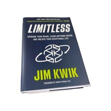

Library › Self-Improvement
Limitless — Summary & Key Lessons

Upgrade your brain, learn anything faster — from 'the boy with the broken brain' to the world's #1 brain coach.
📖 OPEN THE FULL INTERACTIVE BREAKDOWN →🌐 Read it in Hindi, Hinglish, Gujarati, Tamil & 22 more languages — free, with audio.
💡 The Big Idea
A childhood head injury left Jim Kwik years behind — teachers called him 'the boy with the broken brain,' and he believed them until his twenties. His escape (learning HOW to learn, since school only taught WHAT) became his career: coaching memory and speed-learning. The Limitless Model has three M's that must ALL be unlocked: MINDSET (your beliefs about your capacity — most limits are LIEs: Limited Ideas Entertained), MOTIVATION (purpose × energy × small simple steps — motivation is a process you generate, not a trait you have), and METHODS (the actual techniques: focus, study, memory, speed reading, critical thinking). Kill the four digital villains (overload, distraction, dementia-by-outsourcing, deduction-atrophy), feed the brain, and remember: when you learn how to learn, everything else compounds.
🧠 The 5 Key Lessons
Lesson 1: Unlimit Your Mindset: Kill the LIEs
Part 2: Limitless Mindset
Every capability sits behind a belief gate: if you 'know' you have a bad memory, you won't train it — the LIE (Limited Idea Entertained) does the limiting before biology gets a vote. Kwik's protocol for limiting beliefs: catch the voice (notice 'I'm not a numbers person' AS a claim, not a fact), interrogate the evidence (usually one childhood incident, generalized for decades), and replace it with a new, useful belief — then let action supply proof. The seven brain-LIEs he demolishes include: intelligence is fixed (neuroplasticity says otherwise), we use only 10% of our brains (myth — you use all of it; the question is HOW), mistakes mean failure (they're the method), and genius is born (it's built through deep practice). The frame that holds it all: your brain is a supercomputer and your self-talk is the program it runs.
📖 Example: Kwik's own arc is Exhibit A: post-injury, reading years behind, publicly labeled broken — until a mentor's question ('why are you in school? to learn... has anyone taught you HOW?') flipped the frame. The turnaround wasn't a cure; it was retraining under new… Read the full example →
⚡ Do this: Write your three loudest 'I'm just not a ___ person' claims. For each: the originating incident, the counter-evidence you've ignored, and the replacement belief. Then take one action this week that only the NEW belief would take.
Lesson 2: Motivation = Purpose × Energy × S3
Part 3: Limitless Motivation
Motivation isn't a feeling you wait for — it's a renewable output with a formula: PURPOSE (know your why for each learning goal; connect it to identity and to people you love — reasons reap results), ENERGY (the brain runs on the body: Kwik's brain-food top ten, sleep as memory-consolidation infrastructure, exercise as cognition fuel, killing ANTs — automatic negative thoughts — and managing your peer group and environment as inputs), and S3: SMALL SIMPLE STEPS (the smallest action you cannot fail at — one page, one flashcard, two minutes — because momentum manufactures motivation, never the reverse). Add FLOW as the multiplier: 90-minute distraction-free blocks, clear goals, slight stretch — and the four flow assassins to evict: multitasking, stress, fear of failure, and lack of conviction.
📖 Example: Kwik's morning routine is the formula operationalized: remembered dreams (recall training), hydration and brain smoothie (energy), cold shower (state), breathing and gratitude (ANT control), reading (input) — stacked small steps that generate the day's… Read the full example →
⚡ Do this: For your current learning goal, write the purpose line: 'I'm learning X so that Y, for Z.' Fix one energy leak this week (sleep time, one brain food added, one ANT named and answered). Then define your S3 — the two-minute version you'll do daily regardless of mood.
Lesson 3: Focus & Study: The Lost Arts
Part 4: Limitless Methods — Focus / Study
Concentration is a muscle atrophied by app design: every notification is a rep for distraction. Kwik's rebuild: do one thing (multitasking is a myth — task-switching costs time and IQ points), clear mental clutter with scheduled worry-time and to-do capture, and practice the 4:8 breath (calm is the precondition of focus). Then upgrade studying itself — most people use methods frozen in third grade: take notes by hand in your own words (capture AND create: left column notes, right column your thoughts), use active recall (test yourself instead of re-reading — the illusion of familiarity is study's great fraud), space the repetition (review at expanding intervals), engage all senses and states (emotion is memory glue — bored studying is unmemorable studying), music (baroque tempo for focus), and teach what you learn (the explanation test exposes every gap; learning WITH the intention to teach doubles retention before you've taught anyone).
📖 Example: Kwik's Pomodoro logic cites the primacy-recency effect: in any learning session you best remember the beginning and end — so six 25-minute sessions create twelve high-retention edges where one three-hour slog creates two (plus fatigue). His active-recall… Read the full example →
⚡ Do this: Switch to recall-first studying this week: after every reading session, close the book and write everything you remember, THEN check. Schedule reviews at 1 day, 3 days, 7 days. And adopt one 25-minute Pomodoro rhythm with the phone in another room.
Lesson 4: Memory: The Trained Superpower
Part 4: Limitless Methods — Memory
Memory is the foundation beneath every other cognitive skill (reasoning, creativity, and expertise all manipulate remembered material), and it responds to training like muscle to weights. Kwik's core: MOM — Motivation (care about it), Observation (most 'forgetting' is never-encoding: you didn't forget the name; you never heard it), Methods (the techniques). The technique stack: VISUALIZATION + ASSOCIATION (the brain remembers images and connections, not abstractions — link new information to known anchors with exaggerated, emotional, moving pictures), the LINK method for lists (each item interacts absurdly with the next in a story), the LOCI method for speeches and sequences (place images along a familiar route — the technique of every memory champion since ancient Greece), and for names: believe you can, exercise attention at introduction, say it back, use it, ask about it, end with it. The payoff compounds: trained memory means faster learning everywhere.
📖 Example: Kwik's stage demonstrations — memorizing 50+ audience names in minutes, or 100-digit numbers — always end with the reveal: no gift, pure method, teachable in an afternoon. His students replicate it reliably: the medical student converting drug interactions… Read the full example →
⚡ Do this: Build your first memory palace tonight: ten locations along a route you know blind (your home), then place tomorrow's to-do list along it as ridiculous images. Use the name-protocol on every introduction this week — say it, use it, end with it.
Lesson 5: Speed Reading & Thinking in New Dimensions
Part 4: Limitless Methods — Speed Reading / Thinking
Reading is the master skill (all other learning flows through it) and most adults read at a third of their capacity, sabotaged by three childhood habits: REGRESSION (re-reading lines — usually anxiety, not comprehension), SUBVOCALIZATION (pronouncing every word in your head — capping reading at talking speed; the fix is counting or humming while reading to occupy the inner voice, since you don't need to SAY a word to UNDERSTAND it), and word-by-word fixation (train the eyes to grab word-groups; use a VISUAL PACER — finger or pen — which alone boosts speed ~25% because eyes follow motion). Counterintuitively, faster reading often IMPROVES comprehension: at crawl speed the mind wanders; at pace it engages. Then widen the thinking itself: exponential thinking (ask 'what would this look like 10x?'), the six thinking hats for perspective-switching, and choosing your mental models deliberately. Speed isn't the point — capacity is: read faster to read MORE, and think in frames chosen rather than inherited.
📖 Example: Kwik's pacer demonstration converts skeptics in minutes: baseline reading speed, then the same passage with a finger tracing beneath lines — immediate ~25–50% gains with equal or better comprehension scores, because the pacer suppresses regression… Read the full example →
⚡ Do this: Test your baseline (words per minute on any page). Then read 20 minutes daily this week WITH a pacer, pushing slightly past comfort. Schedule your reading like meetings — the skill only compounds on material actually read.
✅ 5-Step Action Plan
- Demolish three LIEs with evidence and replacement beliefs.
- Write the purpose line; fix one energy leak; define the daily S3.
- Study recall-first with spaced reviews and Pomodoros.
- Build a memory palace; run the name-protocol all week.
- Read daily with a pacer; push speed past comfort.
⚠️ When This Doesn't Work
Kwik's 'your brain can do anything' is motivating — and it is precisely the promise that sank Lumosity: 70 million users, $100 million raised, and an FTC fine for claiming brain games make you smarter when the evidence said they only make you better at the games. The brain is not limitless; it is excellent at what it practises and indifferent to what it doesn't. Train with specific, transferable skills, not with the feeling of training.
💀 The Graveyard Proves It
🧠 Lumosity — $2M Fine for Selling Brain Training It Couldn't Prove. Burn: $2M FTC fine + $50M refunds; entire category discredited. Read the full case study →
💬 Best Quotes from Limitless
- “If an egg is broken by an outside force, life ends. If broken by an inside force, life begins. Great things always begin from the inside.”
- “There is no such thing as a good memory or a bad memory — only a trained memory and an untrained memory.”
- “Knowledge is not power. Knowledge is only potential power. It becomes power when we apply it.”
Interactive version: mark lessons as read, listen in your language, share quote cards.